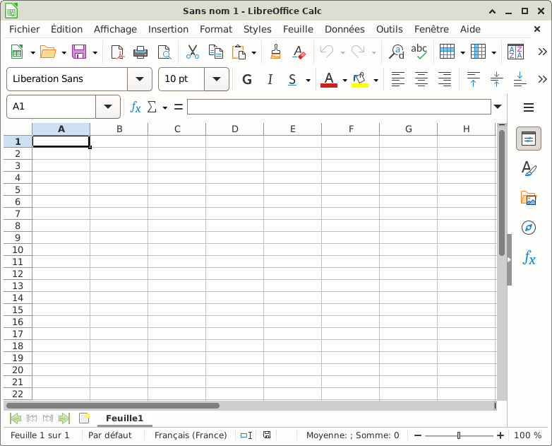
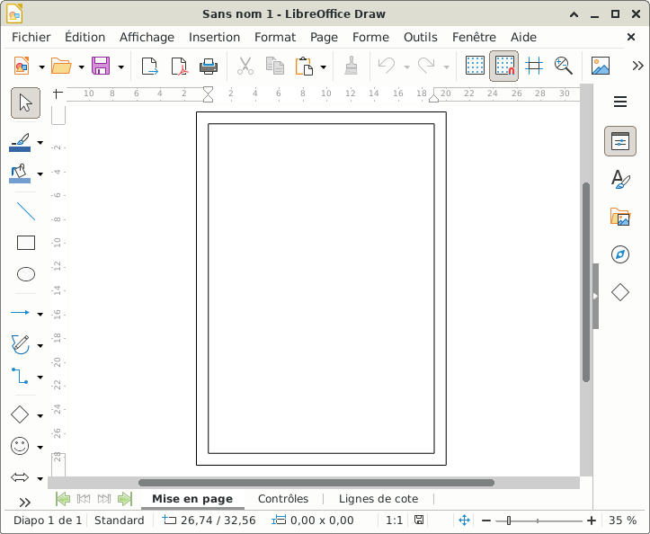
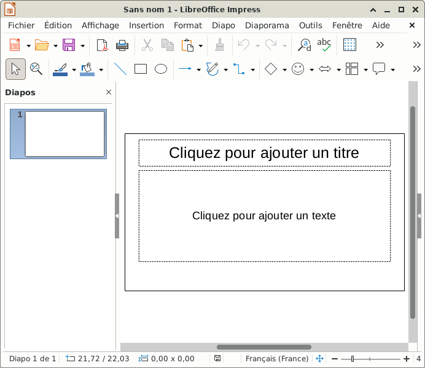
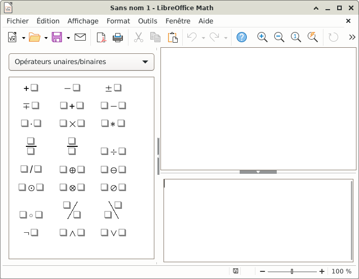
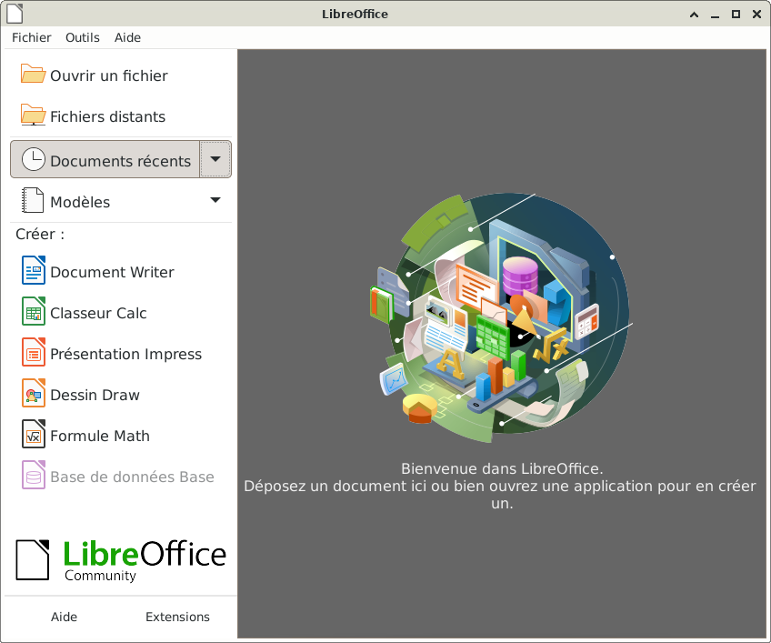
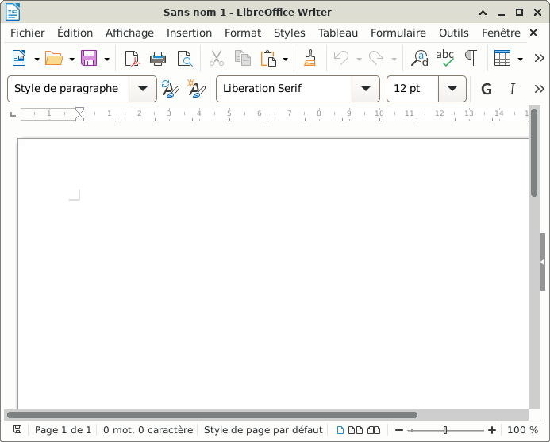
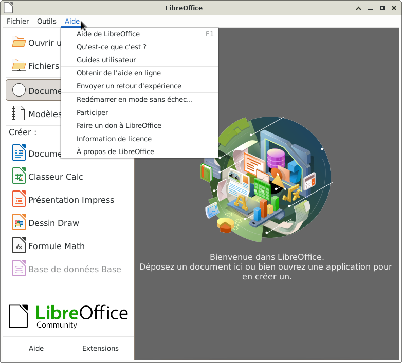
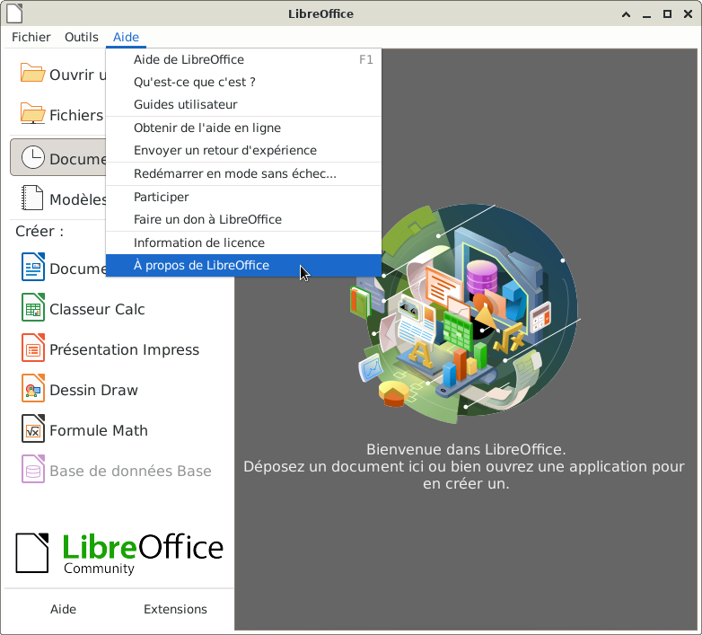
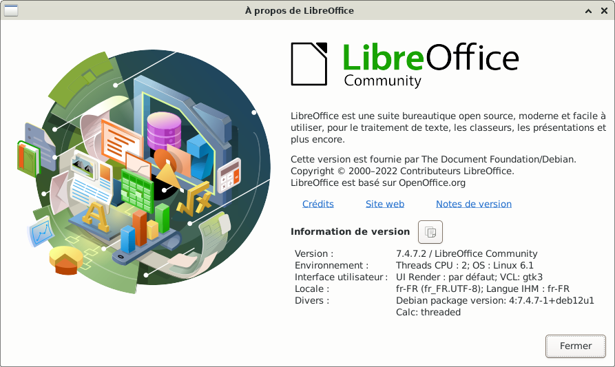

&
LibreOffice, une suite bureautique complète : LibreOffice
LibreOffice est une suite bureautique complète Libre & Open Source. Elle est installée par défaut sur toutes les versions actuelles de Debian. Debian/LibreOffice
Le site officiel LibreOffice
Qu'est-ce que LibreOffice : ici
Documentation LibreOffice : Doc
Et le Wiki.documentfoundation


Pour information, il est aussi possible d'ouvrir l'application « LibreOffice Draw » dans :
Applications > Graphisme









Informations sur le logiciel libre et Merci.
Marques déposées :
Ce site ne fait pas partie de Debian, n'est pas produit par le projet
Debian, ni approuvé par le projet Debian.
Ce site n'est pas affilié à Debian. Debian est une marque déposée appartenant
à Software in the Public Interest, Inc.
Contribuer :
Ce site ne fait pas partie de XFCE, n'est pas produit par le projet
XFCE, ni approuvé par le projet XFCE.
Ce site n'est pas affilié à XFCE.
Ce site est juste réalisé par un passionné.